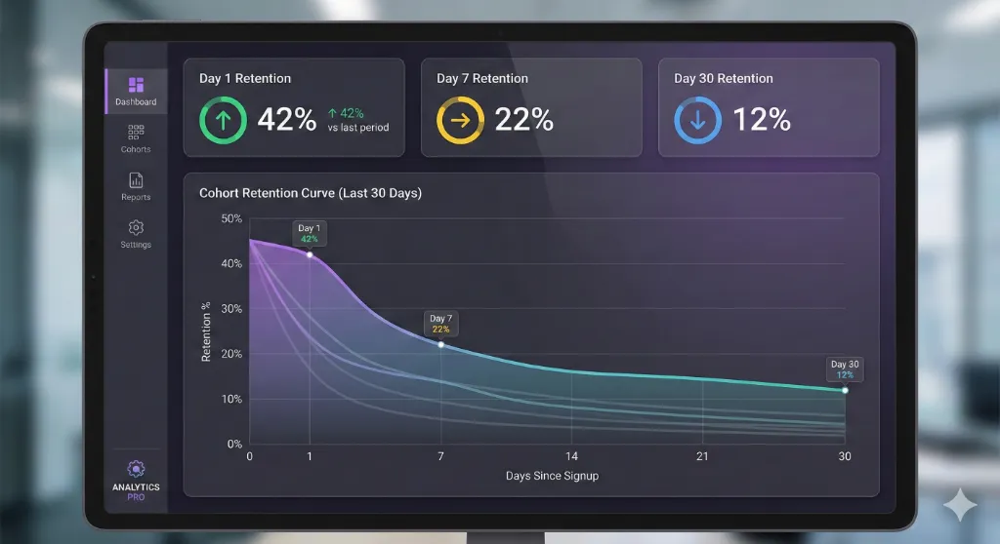
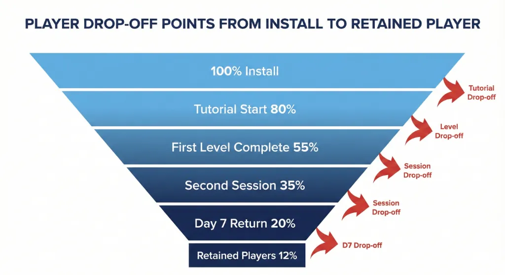
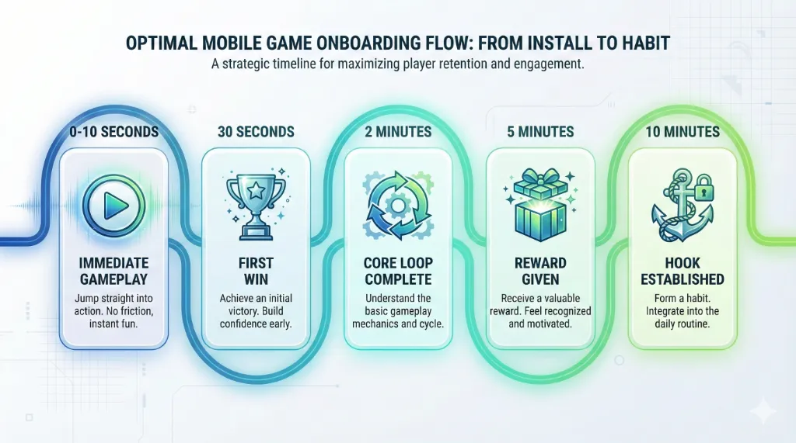
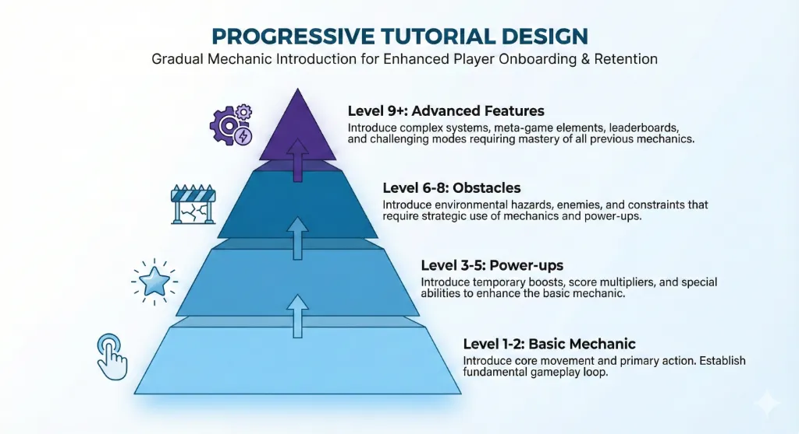
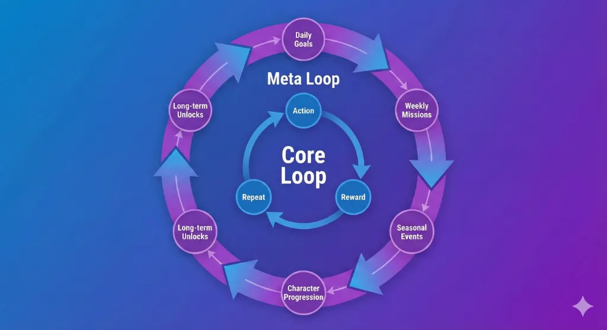
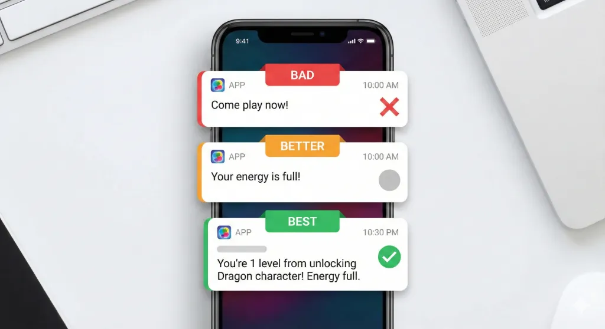
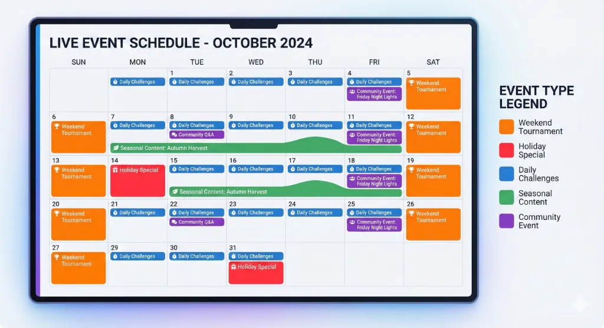
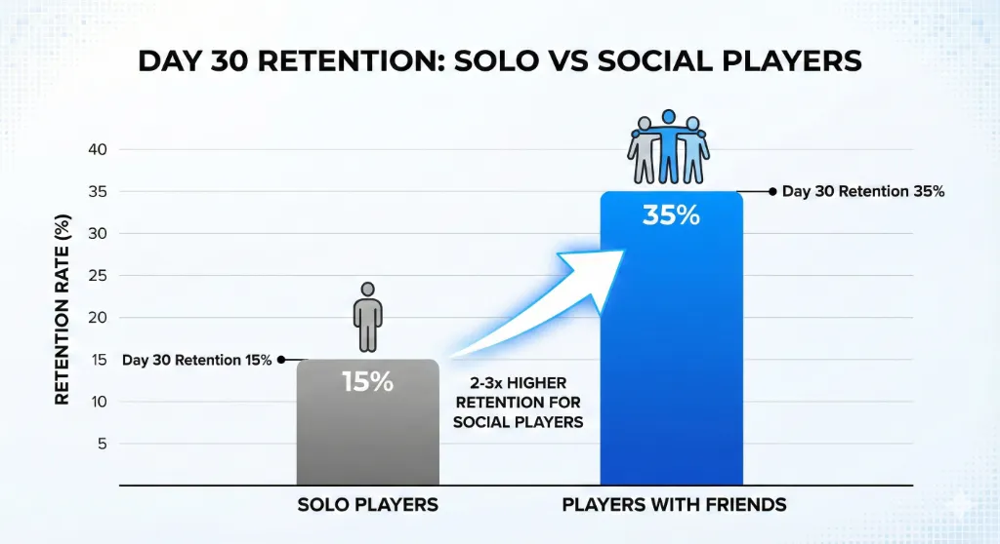
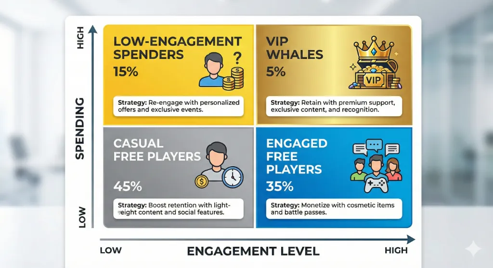
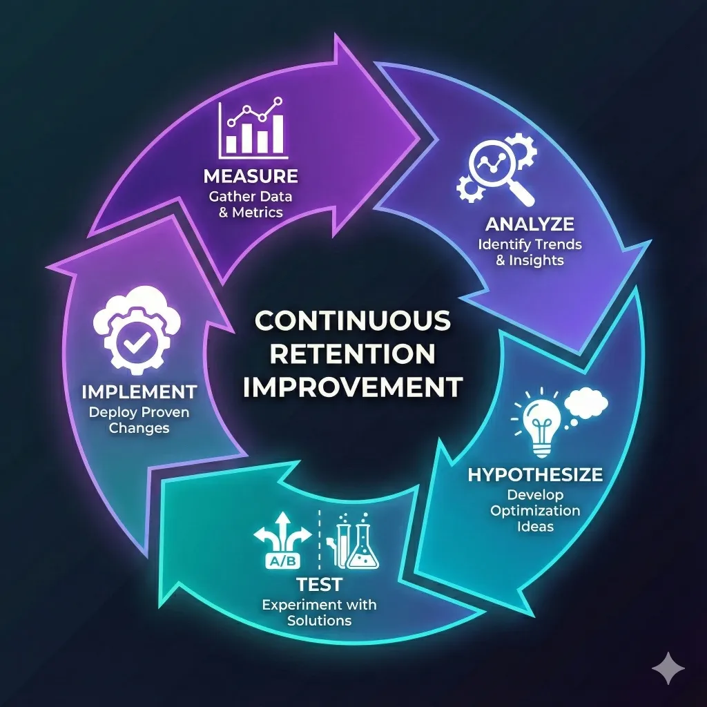

How to Increase Player Retention in Mobile Games 2026
GROWTHLearn how to increase mobile game player retention in 2026. Discover onboarding optimization, engagement loops, push notifications, live events, and data-driven retention strategies.
Why Player Retention Matters More Than Downloads
Player retention determines your mobile game's long-term success and profitability far more than initial download numbers. A game with 10,000 downloads and 40% Day 1 retention will outperform one with 100,000 downloads but only 10% retention. Retained players generate advertising revenue, make in-app purchases, invite friends, and leave positive reviews that drive organic growth.
Rising user acquisition costs in 2026 make retention even more critical. The average cost per install (CPI) continues climbing globally, meaning each acquired player represents a larger investment. Retaining players longer improves return on ad spend (ROAS) and creates sustainable revenue streams without constantly paying for new installs. For Pakistani indie developers competing against studios with massive marketing budgets, superior retention is your competitive advantage.
Understanding Retention Metrics
Key Retention Benchmarks
Day 1 retention measures the percentage of players who return the day after installing your game. Industry benchmarks vary by genre—hyper-casual games target 35-45% Day 1 retention, while mid-core games aim for 40-50%. Day 7 retention (players returning after one week) typically ranges from 15-25%, and Day 30 retention (monthly return rate) averages 8-15% for successful games.
Track retention cohorts to understand player behavior patterns. Analyze retention curves showing what percentage of each install cohort returns daily over 30-90 days. Healthy retention curves decline gradually and stabilize, while problematic curves drop sharply and never level off. Your goal is flattening these curves—retaining higher percentages longer before inevitable natural churn.
Identifying Churn Points
Most player churn happens within the first five minutes of gameplay. Analytics reveal exactly where players quit—specific tutorial steps, difficulty spikes, confusing UI moments, or technical issues. Map your early-game experience identifying every potential friction point that might cause abandonment before players experience your core loop.
Segment churn analysis by player type, acquisition source, and device specifications. Players from paid ads may churn differently than organic installs. iOS users might exhibit different retention patterns than Android players. Budget device users may churn due to performance issues invisible on high-end test devices. Granular churn analysis reveals specific problems requiring targeted solutions.
Optimizing Onboarding for Immediate Engagement
The Critical First Five Minutes
Your first impression determines whether players become retained users or immediate uninstalls. Expose core gameplay within the first three taps or swipes—no lengthy downloads, mandatory account creation, or extensive tutorials before players experience what makes your game fun. Games requiring five minutes of setup before gameplay starts lose the majority of potential players.
Design onboarding around "show, don't tell" principles. Instead of text-heavy tutorials explaining mechanics, let players learn through interactive gameplay with contextual hints. Reward early actions immediately with positive feedback—visual effects, sound cues, and small rewards that create dopamine hits encouraging continued play.
Progressive Tutorial Design
Introduce mechanics gradually over the first 5-10 gameplay sessions rather than overwhelming new players with everything simultaneously. Start with the absolute core mechanic, then layer additional features as players demonstrate mastery. For example, a match-3 game might introduce basic matching first, then power-ups in level 3, then obstacles in level 5, progressively deepening complexity.
Make tutorials skippable for returning players or those who intuitively understand mechanics. Forcing experienced mobile gamers through basic instructions frustrates them and increases early churn. Offer a "skip tutorial" option while ensuring players who skip don't miss critical information needed to succeed.
Early Wins and Quick Rewards
Engineer early levels for high success rates ensuring players experience victories before encountering real challenges. The first 3-5 levels should be completable by virtually anyone, building confidence and investment before introducing difficulty. Early wins create positive associations and motivate players to continue when challenges increase.
Building Engaging Core and Meta Loops
Designing Addictive Core Loops
The core loop is the fundamental action-reward cycle players repeat constantly. This loop must feel inherently satisfying with each iteration delivering micro-rewards (points, progress, unlocks) that motivate the next iteration.
Creating Compelling Meta Loops
Meta loops are long-term progression systems that give meaning to repeated core loop engagement. While core loops provide immediate gratification, meta loops create goals requiring days or weeks to achieve—unlocking new characters, upgrading abilities, climbing ranked ladders, or completing collections. Meta loops transform individual sessions into chapters of a larger journey.
Leveraging Push Notifications Strategically
Timing and Personalization
Send push notifications when they're genuinely valuable to individual players, not on generic schedules. Use behavioral data to identify optimal notification timing—when does each player typically play?
Personalize notification content based on player progress and preferences. Instead of generic "Come back and play!" messages, reference specific player situations: "Your energy is full—continue your adventure!" or "You're one level from unlocking the Dragon character!". Contextually relevant notifications demonstrate you understand individual player journeys, increasing engagement.
Live Events and Fresh Content
Update content on predictable schedules so players anticipate new additions. Monthly level packs, bi-weekly events, or seasonal content drops create rhythm and routine.
Social Features and Community Building
In-Game Social Systems
Implement social features connecting players within your game. Friend systems, guilds/clans, cooperative challenges, and competitive leaderboards transform solitary gameplay into social experiences. Players with in-game friends exhibit dramatically higher retention—typically 2-3x better than solo players—because social connections create accountability and shared experiences.
Rewarding Player Loyalty
Daily Reward Systems
Implement escalating daily login rewards encouraging consecutive day streaks. Day 1 provides small rewards, day 7 offers better prizes, and day 30 delivers premium rewards. Streak systems create habitual daily check-ins—players don't want to break multi-week streaks, driving consistent engagement even during periods of reduced active play time.

Data-Driven Retention Optimization
Analytics and Player Segmentation
Segment players by behavioral patterns, not just demographics. Identify whales (high spenders), dolphins (moderate spenders), minnows (small spenders), and free players. Further segment by engagement patterns—daily players, weekend players, binge players, and casual dabblers.

Regional Retention Strategies for Pakistani Markets
Localized Content and Events: Create culturally relevant content resonating with Pakistani and South Asian audiences. Eid-themed events, cricket-related content, or references to local culture build stronger emotional connections than generic Western content.
Community Building: Foster local language communities through social media, Discord servers, or WhatsApp groups. Pakistani players prefer engaging in Urdu or regional languages rather than English-only communities.
About Vexillogic
We build mobile games with retention-first design principles, creating engaging experiences that keep players coming back. Our expertise in hyper-casual and arcade game retention helps maximize player lifetime value and sustainable revenue. Contact us to develop your next mobile game.